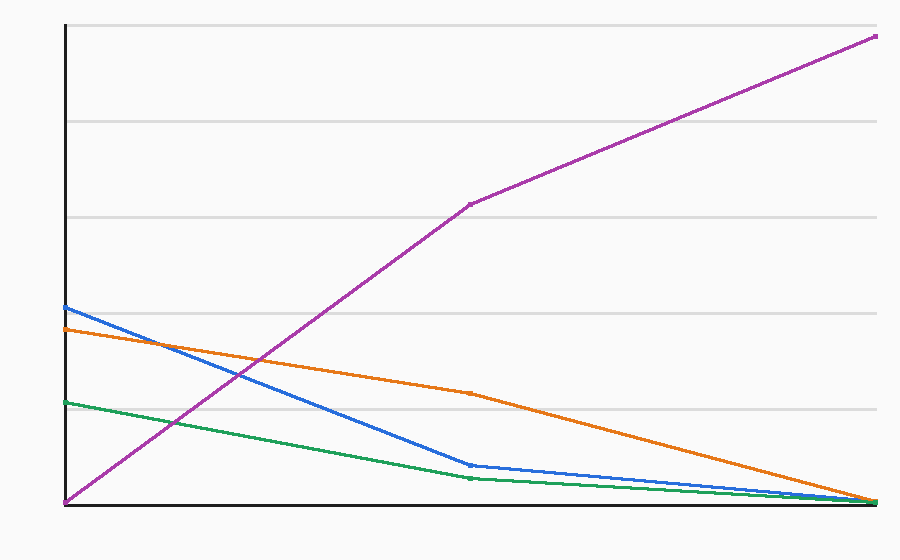
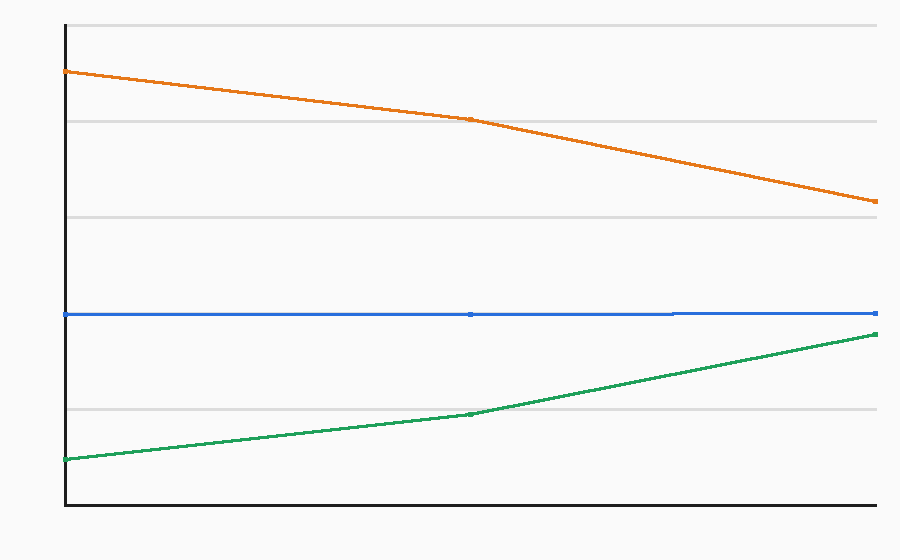
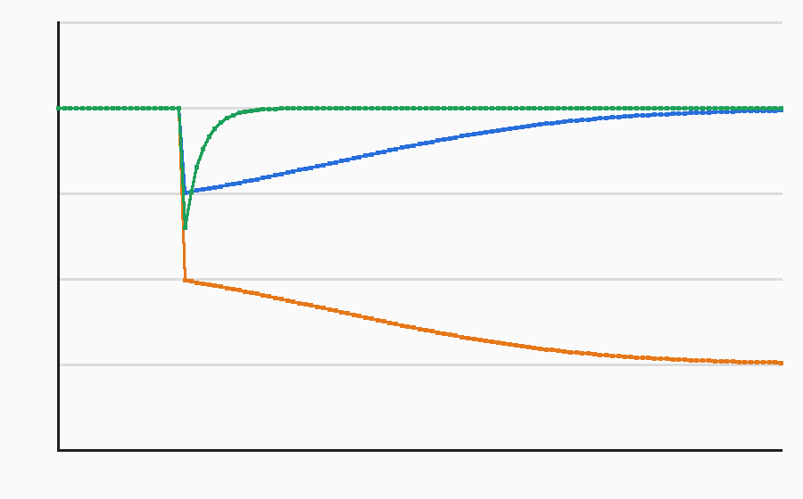
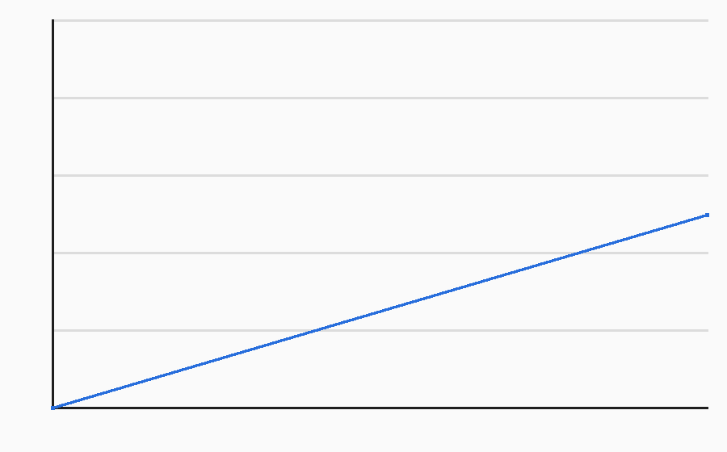
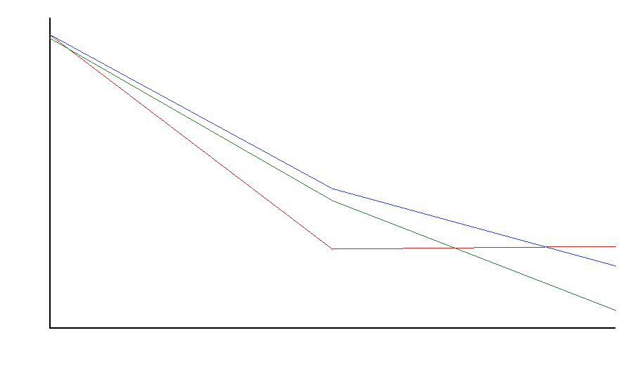
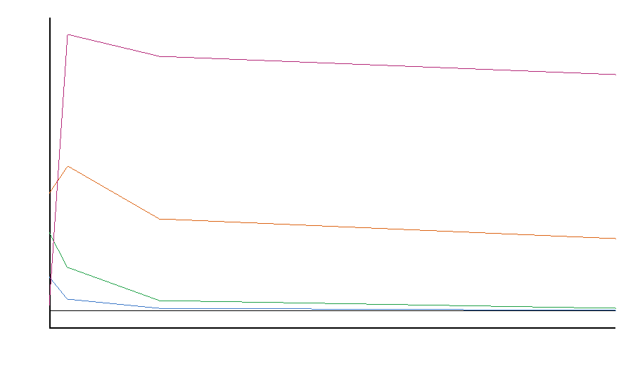
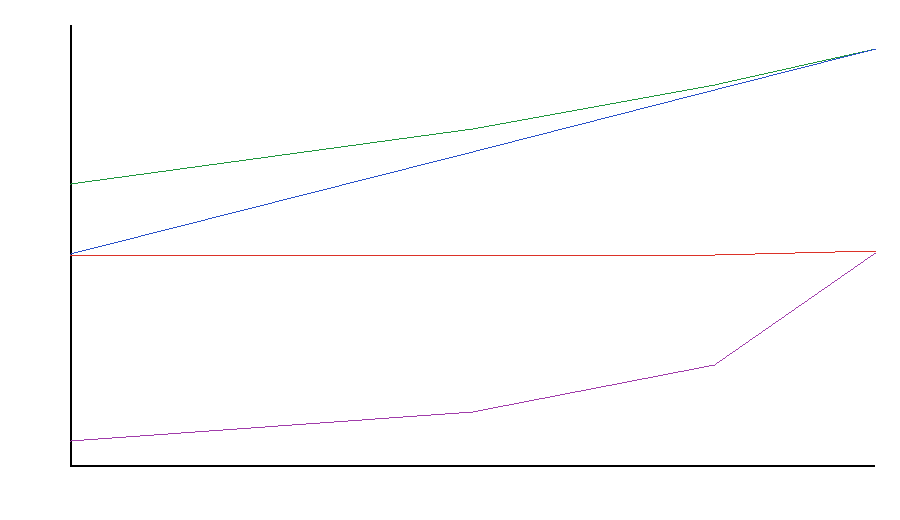
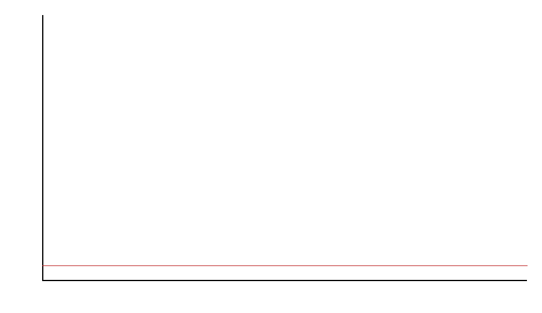
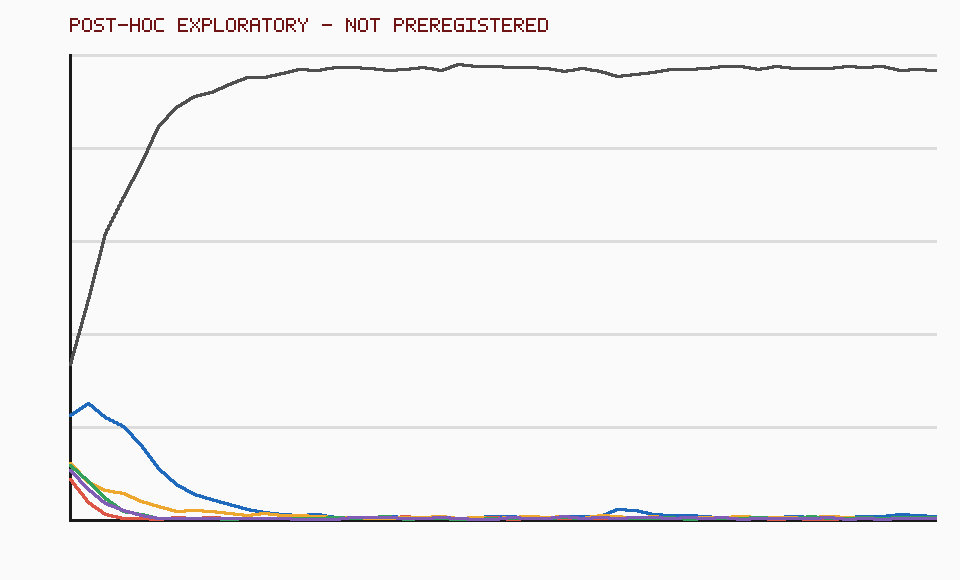

Dharma and Daoist Concepts in Decision Theory: Computable Bridges, Boundaries, and a Falsified T1 Threshold
Macheng Shen (research initiator), in collaboration with an AI research assistant
1. Plain-language conclusion
It is intuitively tempting to understand “enlightenment” as knowing more and more, but more complete knowledge does not automatically loosen attachment. The more defensible H-Bridge says that increased understanding can reduce inner conflict only when a model can also see its own limits and allows knowledge that “some things are uncontrollable” to revise existing preferences. The part of wu wei most amenable to formalization is using the environment’s own dynamics and applying only the necessary control at critical points—not doing nothing. The unity of knowledge and action can be divided into three researchable layers: perception and action share an objective; skilled action is distilled from planning; and some causal knowledge can be acquired only through intervention. The toy experiments support the H-Bridge’s conditional interaction and a trade-off at moderate self-precision, but those successes belong only to the models specified in advance. By contrast, the wu-wei experiment did not meet its preregistered success threshold, so its attractive energy-saving result cannot be presented as validation. Mathematics can clarify structure and generate counterexamples, but it cannot define “pure awareness,” the moral source of conscience, complete intentionlessness, or existential suffering. The formalization here should be treated as a testable map, not as religious experience or the traditions themselves.
2. Concept-by-concept correspondence
| Traditional concept | Formal object | Strength | Main distortion |
|---|---|---|---|
| Wu wei | LMDP: reweight passive dynamics by desirability, pricing control deviation with KL | strong control problem | Still presupposes an objective function and cannot express “letting go even of the objective” |
| Unity of knowledge and action | Control as inference; planning distillation; the causal difference between observation and intervention | strong to partial | Captures structure but loses conscience, mind-as-principle, and moral motivation |
| Enlightenment | Task-relative world-model error, preference precision, and its updateability | partial | “A complete model is enlightenment” is too strong; knowledge can also intensify conflict |
| No-self | A latent self-variable and its precision (gamma_{self}) | partial | Reducing rigid priors is not realizing no-self, nor is it deleting the agent |
| Attachment, craving, and suffering | High preference precision and persistent risk terms in uncontrollable situations | partial | Can only approximate the conflict of frustrated desire; cannot exhaust aging, illness, death, or pervasive conditioned suffering |
| Emptiness | Model classes, coarse-graining, and statistical non-identifiability | rhetorical to partial | Engineering-level “lack of intrinsic essence in representations” cannot replace Madhyamaka argument; this formalization is itself not an ultimate description |
| Dependent origination | Structural causal models and interventional distributions | partial | Fixes variables and causal edges and cannot carry all the ethical and ontological meaning of dependent origination |
| Calm and insight, meta-awareness | Second-order inference over the allocation of attentional precision | partial | A computational proposal, not a confirmed neural mechanism of meditation |
| Sudden and gradual awakening | Continuous evidence accumulation and a discrete flip in the MAP model | partial | Does not include liberation, ethical transformation, or lineage recognition |
| Middle Way | A Pareto frontier under explicit objectives | rhetorical to partial | Not a midpoint parameter value or generic compromise |
| The Dao follows what is natural; highest goodness is like water; reversal is the movement of the Dao | Generative processes, compliant control, and negative feedback | rhetorical | Without independent predictions, these are merely renamings in modern terminology |
3. The enlightenment tension: A / B / Bridge and T3
H-A: epistemic completeness
The more thorough the exploration and the more accurate the model, the lower the conflict. The problem is that factual knowledge does not determine preferences: knowing more accurately that a bad outcome is unavoidable may make fixed attachment more painful.
H-B: release of attachment
Reducing attachment itself is sufficient to lower conflict, independent of increased understanding. The problem is that if one cannot see one’s own impulse to control and its consequences, preferences are difficult to revise in a targeted way.
H-Bridge: conditional bridge
Increased understanding leads to release only when both bridge factors are present: the model can represent its own modeling and control limits; and preferences can be updated by evidence of uncontrollability.
In a generative toy experiment with 16 conditions and 800 runs per cell, T3 shows a clear interaction: under the complete bridge, high exploration changes distress by −1.509; without the bridge, the change is +4.369; the difference-in-differences is −5.878. The prespecified kill condition—an exploration-effect difference of less than 1 inside versus outside the bridge—was not triggered. This counts against the unconditional sufficiency of H-A and supports the distinguishable structure of H-Bridge within this model; because the mechanism was written into the model according to H-Bridge, the result is not independent validation of a real psychological mechanism.

4. Wu wei: LMDP and T1’s negative result
A linearly solvable Markov decision process writes the cost at each step as a state cost plus a KL cost for deviation from passive dynamics:
This yields a precise, weak engineering version: good control does not reduce action to zero; it reweights the natural flow and concentrates control where it genuinely changes reachable outcomes. It can distinguish compliant control, random drift, and sustained brute force.

5. Three layers of the unity of knowledge and action
- Unified objective: active inference places state estimation and action selection within the same optimization objective. “Knowledge” and “action” constrain each other computationally rather than forming completely independent sequential modules.
- Amortized distillation: a slow planner produces a policy, which is then distilled into a fast parametric policy. Repeated practice compiles explicit deliberation into fluent skill, explaining the difference between “knowing how to do it” and “being able to do it.”
- Interventional knowledge: under confounding, observation (P(Y\mid X)) generally cannot identify the intervention (P(Y\mid do(X))). Some causal knowledge must therefore be acquired through action; this is a rigorous weak version of “knowing without acting.”
These three layers do not formalize what Wang Yangming called conscience. They describe unified control, skill formation, and causal identification; they neither prove that moral knowledge is innate nor derive “mind is principle” from performance metrics.
6. T2: the commitment–recovery trade-off in self-precision
T2 scans (gamma_{self}\in\{0,0.35,1,3\}) in a POMDP whose rules change. Moderate precision at (gamma_{self}=1.0) produces the highest total return, 40.029: when precision is near zero, recovery is fast but sustained commitment is harder to form; when precision is high, commitment is strong but recovery after the rule reversal is slow and cumulative risk is higher. The preregistered kill condition—the endpoint return is highest, or precision affects neither recovery nor commitment—was not triggered.
futile_control_rate equals 1 under every condition because an action must still be chosen at each step during the uncontrollable phase. This metric has degenerated and has no discriminative power; the conclusion depends only on cumulative risk, recovery, commitment, and total return.
7. Where formalization breaks
- Awareness itself: equations can describe attended contents and how attentional resources are allocated, but they do not explain why experience exists.
- The moral ontology of conscience: priors can encode preferences, but an inferential framework alone cannot explain why moral law is valid or where it comes from.
- The intentionlessness of wu wei: every control model presupposes an objective; “pursuing an objective efficiently” is not “falling away from the objective itself.”
- The full spectrum of suffering: risk terms can simulate conflict between desire and uncontrollability, but cannot compress conditioned suffering, aging, illness, death, or existential dissatisfaction into one prediction error.
- Emptiness’s reflexive constraint on descriptive language: statistical non-identifiability is only an analogy; elevating information or models into ultimate entities would itself become an object of critique.
- Differences within the traditions: Buddhist traditions do not offer one answer about the relation between awakening and omniscience; neither the sudden–gradual debate nor Laozi, Zhuangzi, and later Daoism can be unified by one learning curve.
8. Disagreements between the two analyses, and the general governance question
On “emptiness”
One analysis treats model dependence, coarse-graining, and non-identifiability as a partially operational correspondence; the other emphasizes that this remains an epistemic analogy, and that Madhyamaka would go on to question whether “information” itself has ultimate standing. The merged position is that the engineering correspondence is usable, but its strength must not exceed “partial,” and it cannot be used to establish a new substantialism.
The blind spot in “wu wei”
The formal draft highlights the strong mathematical structure and killable experiment of an LMDP; the critical draft emphasizes that its objective function never disappears. The merged position is that the correspondence is strong for “control that deviates less from natural dynamics,” but only partial or rhetorical for intentionlessness, spontaneity, and political ethics in the classical context.
Tight coupling does not imply concentrated power
Tight perception–action coupling within an individual or single system is a design for rapid information return; concentrating perception, judgment, execution, and review in the same node of organizational governance weakens correction and accountability. The two can coexist, but layer boundaries must be explicit: the execution loop can be tight while authorization and verification remain separate; a locally unified objective cannot automatically justify institutional centralization.
9. Falsifiable predictions
- Wu-wei control: if the objective aligns with a natural attractor, there should be a high-success, low-KL control point, with control cost concentrated near the barrier. T1 failed because its 0.927 success rate did not reach 0.95.
- Self-precision: moderate (gamma_{self}) should outperform both endpoints while showing a commitment–recovery trade-off; if an endpoint is best or neither readout changes, the operationalization fails. T2 has not yet triggered this condition.
- H-Bridge: exploration’s effect in reducing conflict should depend on “preferences are updateable” and “the model includes its own limits” holding simultaneously; if the effect difference inside versus outside the bridge is less than 1, the design is not distinguishable. T3 has not yet triggered this condition.
- Interventional knowledge: in tasks with confounding, active interveners should have lower causal error than pure observers with equal samples; if there is no difference, the causal weak version of the unity of knowledge and action fails.
- Distillation: distillation after planning should reduce action latency while retaining transfer performance; if there is no speed benefit or transfer degrades substantially, the skill-layer mapping fails.
- Sudden–gradual mechanism: continuous evidence can accompany a discrete flip in MAP structure selection; if pure parameter learners show the same jump, or the structural model shows no threshold behavior, the explanation loses discriminative force.
- Meta-awareness: updateable second-order precision should recover calibration after a rule change faster than fixed attentional gain, without impairing discrimination during stable periods; otherwise the modeling proposal is weakened.
10. Do-not-claim list
- We do not claim that Buddhism, Daoist thought, or enlightenment has been proven by simulation.
- We do not claim that the free-energy principle solves the hard problem of consciousness, nor do we unconditionally equate variational free energy with thermodynamic free energy.
- We do not equate suffering with reward-prediction error, negative reward, or a single KL term.
- We do not equate no-self with deleting self-states, depersonalization, incapacity, or exemption from responsibility.
- We do not equate emptiness with nihilism, statistical uncertainty, or “everything is information.”
- We do not equate wu wei with inaction, a random policy, minimum energy consumption, or a particular temperature limit.
- We do not equate the Middle Way with setting a parameter to 0.5, nor sudden awakening with a neural-network phase transition.
- We do not equate the unity of knowledge and action with “act first, talk later,” still less treat tight coupling inside a system as justification for centralized authority.
- We do not equate conscience with a reward function, nor the Dao with a generative process or a Solomonoff prior.
- We do not promote toy experiments, engineering success, or attractor diagrams into ontological evidence.
- We do not claim that there is only one position within the traditions, nor that these bridges are novel without comparison.
11. Where conscience comes from: theory of mind, games and karma
Updated · 2026-09-27 The round-2 preregistered models C1–C4 and the post-hoc exploratory arm are complete; all round-1 verdicts remain unchanged.
The submitted intuition and a one-shot theorem
A reader-submitted intuition worth testing is that, among agents sharing similar models of minds and meeting repeatedly, conscience may be an internalized tool for escaping the Prisoner’s Dilemma. We treat this neutrally as a research hypothesis, not a conclusion. The strict boundary is: in a one-shot Prisoner’s Dilemma, if utility contains only one’s own material payoff, theory of mind (ToM) improves prediction of the other player but does not alter dominant defection. Knowing that “the other is like me” does not itself put that person’s welfare into my objective.
With other-regard (U_i=\pi_i+w\pi_j), the general threshold for cooperation against either action is:
Replace “≥” with “>” for strict preference. When the partner cooperates, (w=1) suffices iff (2R>T+S). When the partner defects, it additionally requires (T+S\geq2P) (or (T+S>2P) for strict preference), which the definition (T>R>P>S) does not guarantee. For (T=4,R=3,P=2,S=0), the agent is exactly indifferent.
Karma in four layers only
| Layer | Limited formal counterpart | Boundary |
|---|---|---|
| K1 social reputation | Observed and assessed conduct feeds back through third-party help: indirect reciprocity | Requires observers and a same-generation public reputation; not karma as a whole |
| K2 intention-sensitive assessment | Observers infer intention before judging; norms such as standing can be extended this way | Needs an explicit ToM-accuracy and misclassification model; AN 6.63 identifies karma with intention (cetanā) |
| K3 internal dispositions | A state with memory and path dependence, or hysteresis | Round-1 preregistered hysteresis failed; a behavioral state is not a stream of consciousness |
| K4 doctrinal karmic result | No reliable game-theoretic counterpart | The karmic results discussed in MN 135 are not formalized here |
Round-1 preregistered results
- Noisy repeated Prisoner’s Dilemma: killed. At 10% action and observation noise, the fixed-weight conscience type ended near 8.3%, below the preregistered 10% kill line, with instability across runs. Its specific relative weakness is against TFT, which retained 23.4%; WSLS retained only 5.7%. At 25% noise, all three cooperation mechanisms collapsed to about 0.7%–0.8%.
- Indirect reciprocity: passed its limited criterion. Standing earned more than image scoring at both 10% and 25% assessment error. This supports only the limited robustness of a public-reputation rule.
- Hysteresis: failed. The trajectories look bistable but miss the preregistered adjacent-shock threshold. A curve built to be bistable is not evidence about real conscience.
- One-shot anonymous help and anti-cartel: passed. The other-regarding model donated in 49.74% of cases versus 0 for reciprocity-only, and it rejected collusion after an outsider’s loss was included while a coalition-only rule joined. This shows a proximate preference can express the difference; it does not explain the preference’s origin or prove moral value.




Round-2 preregistered results
- C1 evolutionary retention: killed. Under moderate repetition and imperfect cues, each conscience type remained at only about 0.5%–0.8%, far below the preregistered 10% retention line; mimics reached about 24%–35% in the four environments reported below. TFT, WSLS, and self-interested theory of mind were lower still, at about 0.05%–0.19%. Thus conscience was not uniquely weak and retained more than these reactive cooperation mechanisms in C1, but none was evolutionarily stable.
- C3 hysteresis: passed, as a mechanism demonstration only. The equation with written-in self-reinforcement and a social threshold produced a social loop area of about 0.15, versus about 0 in the non-social control. This shows that the specified dynamics can generate path dependence; it does not show that real conscience has those dynamics.
- C2 intention-based reputation: narrowly passed. At high execution error and intention accuracy around 0.9, several rules raised cooperation by about 2.5–3.9 percentage points. The effect was not universal and cannot be compressed into “adding intention inference always improves cooperation.”
- C4 cartel predictions: failed, with two kills. Widening the scope of sympathy alone did not stop collective harm: even fully including the harmed outsider left all-player collusion as an equilibrium. Preference fixes need institutional fixes that change exit, coordination, or harm-blocking structure.




Post-hoc exploratory: conditional conscience weight (not preregistered)
Final population share by strategy
| Arm / environment | Mean final or late population share |
|---|---|
| Round 1 · noise 0 | conscience 41.3%; TFT 36.6%; WSLS 21.5%; ALLD 0.6% |
| Round 1 · noise 0.10 | conscience 8.3%; TFT 23.4%; WSLS 5.7%; ALLD 62.6% |
| Round 1 · noise 0.25 | conscience 0.7%; TFT 0.8%; WSLS 0.7%; ALLD 97.7% |
| Round 2 C1 · prep 0.25, a 0.8 | conscience implant 0.55%; conscience erode 0.75%; SELF_TOM 0.16%; TFT 0.07%; WSLS 0.06%; ALLD 22.51%; SELF 52.21%; MIMIC 23.56% |
| Round 2 C1 · prep 0.25, a 1.0 | conscience implant 0.53%; conscience erode 0.78%; SELF_TOM 0.19%; TFT 0.07%; WSLS 0.07%; ALLD 41.16%; SELF 21.91%; MIMIC 35.12% |
| Round 2 C1 · prep 0.50, a 0.8 | conscience implant 0.48%; conscience erode 0.48%; SELF_TOM 0.09%; TFT 0.05%; WSLS 0.06%; ALLD 29.35%; SELF 37.98%; MIMIC 31.35% |
| Round 2 C1 · prep 0.50, a 1.0 | conscience implant 0.46%; conscience erode 0.53%; SELF_TOM 0.08%; TFT 0.06%; WSLS 0.07%; ALLD 26.28%; SELF 37.03%; MIMIC 35.38% |
| Post-hoc arm | conditional-w 0.82%; fixed-w 0.38%; TFT 0.6%; WSLS 0.5%; GTFT 0.5%; ALLD 97.2% |

Three tensions with classical texts
- Mencius’s three exclusions in the child-at-the-well passage: the impulse is not to gain favor with the parents, win praise from the community, or avoid the sound of distress. At the proximate level these exclude direct reciprocity, reputational return, and mere relief of one’s own discomfort.
- The scope gradient in Wang Yangming’s “Questions on the Great Learning”: unity extends from a child to birds and beasts, plants, and finally tiles and stones. At the endpoint there is no mind to model and no possible reciprocity, so similarity weighting (w s_{ij}) goes to zero while the classical claim continues—an explicit boundary of the model.
- Zhuangzi’s “Even robbers have a Way”: cooperative norms can serve thieves and cartels, so cooperation is not morality. Similarity weighting also naturally predicts parochial altruism: favoring similar others can coevolve with intergroup conflict.
Proximate, ultimate, and an explicit disagreement
An ultimate account asks why a tendency with (w>0) might have been retained through selection, partner choice, or reputation. A proximate account describes the person directly experiencing compassion, shame, or moral judgment now, without calculating repayment. A commitment-device account can reconcile those levels, but it does not cover beneficiaries who cannot repay, tiles and stones, or normative authority. The two preregistered rounds sharpen the boundary: fixed weight failed in round 1's noisy environment, and evolvable weight did not establish in round 2. Constructed social hysteresis and intention-based assessment demonstrate limited functions of memory and intention discrimination, but do not overturn the evolutionary kills. The commitment function and broader hysteresis analogy remain mechanism claims for further tests, not substitutes for these empirical verdicts.
The account can also predict the opposite of extending innate knowing (zhi liangzhi): an evolutionary/commitment story often predicts that, once people know an interaction is one-shot, reflection weakens intuitive cooperation. Rand et al. (2012) reported that direction, but Bouwmeester et al. (2017) did not reproduce it in a multilab registered replication, so its empirical status is uncertain. The Wangian prediction instead says reflection that removes selfish obscuration strengthens conscience.
Do not claim from this section
- Do not claim that game theory proves conscience, that conscience is merely enlightened self-interest, or that ToM automatically produces cooperation.
- Do not equate cooperation with morality or karma with reputation, and do not generalize one-shot toys into causal claims about real people.
- Do not present K1 success as K2–K4, or define “good” as an other-regard weight.
- Do not use round 2's narrow passes to erase its kills, or present post-hoc exploration as preregistered confirmation.
- Do not use the retracted Whitehouse et al. (2019) article as evidence.
12. References
Only entries that already had links in the two research drafts are listed. “Verified” retains the drafts’ verification labels; this synthesis did not revisit every external page. All others are marked “unverified.”
- Friston, K. (2010). “The free-energy principle: a unified brain theory?” Nature Reviews Neuroscience, 11, 127–138. DOI (verified)
- Todorov, E. (2007). “Linearly-solvable Markov decision problems.” NeurIPS 19. Proceedings (verified)
- Kappen, H. J. (2005). “Path integrals and symmetry breaking for optimal control theory.” JSTAT, P11011. arXiv (verified)
- Ortega, P. A., & Braun, D. A. (2013). “Thermodynamics as a theory of decision-making with information-processing costs.” Proceedings A. arXiv (verified)
- Leike, J., & Hutter, M. (2015). “Bad Universal Priors and Notions of Optimality.” COLT / PMLR 40. Proceedings (verified)
- Laukkonen, R. E., & Slagter, H. A. (2021). “From many to (n)one.” Neuroscience & Biobehavioral Reviews, 128, 199–217. PubMed (verified)
- Van Dam, N. T., et al. (2018). “Mind the Hype.” Perspectives on Psychological Science, 13(1), 36–61. PubMed (verified)
- Seth, A. K. (2013). “Interoceptive inference, emotion, and the embodied self.” Trends in Cognitive Sciences, 17, 565–573. PubMed (verified)
- Deane, G. (2020). “Losing Ourselves: Active Inference, Depersonalization, and Meditation.” Frontiers in Psychology. PMC (verified)
- Sandved-Smith, L., et al. Related work on meta-awareness and deep-parametric active inference. arXiv (unverified)
- Wang Yangming. Instructions for Practical Living and Other Neo-Confucian Writings, trans. Wing-tsit Chan (1963). Open Library (bibliographic record verified)
- Dao De Jing. Chinese Text Project (entry point verified; chapter versions still require separate checking)
- Early Buddhist text entry points: SN 12, SN 22.59, SN 56.11, and DN 22 (entry points verified; interpretations vary across traditions)
- Axelrod, R., & Hamilton, W. D. (1981). “The evolution of cooperation.” Science, 211, 1390–1396. DOI (verified)
- Nowak, M. A., & Sigmund, K. (1998). “Evolution of indirect reciprocity by image scoring.” Nature, 393, 573–577. DOI (verified)
- Nowak, M. A., & Sigmund, K. (2005). “Evolution of indirect reciprocity.” Nature, 437, 1291–1298. DOI (verified)
- Choi, J.-K., & Bowles, S. (2007). “The coevolution of parochial altruism and war.” Science, 318, 636–640. DOI (verified)
- Rand, D. G., Greene, J. D., & Nowak, M. A. (2012). “Spontaneous giving and calculated greed.” Nature, 489, 427–430. DOI (verified)
- Bouwmeester, S., et al. (2017). “Registered Replication Report: Rand, Greene, and Nowak (2012).” Perspectives on Psychological Science, 12, 527–542. DOI (unverified)
- Mencius, “Gongsun Chou I,” child at the well. Chinese Text Project (primary-text entry verified)
- Wang Yangming, “Questions on the Great Learning,” unity extending to tiles and stones. Wikisource (primary-text entry verified)
- Zhuangzi, “Cutting Open Satchels,” “Even robbers have a Way.” Chinese Text Project (primary-text entry verified)
- AN 6.63 (karma and intention). SuttaCentral (entry verified); MN 135 (karmic results). SuttaCentral (entry verified)
Whitehouse, H., et al. (2019). “Complex societies precede moralizing gods throughout world history.” Nature, 568, 226–229.Retraction notice (retracted; not evidence)
Math primer for readers
Reader’s primer: the “hard concepts” on the Dharma × decision theory page
For whom: readers with practical AI experience and a deep interest in Buddhist and Daoist thought, but no mathematics degree. How to use it: each entry first states literally, in 1–3 sentences, what the concept is (without substituting metaphor for mechanism), then gives 1–2 strong introductory resources, preferably free. Use Ctrl+F for unfamiliar terms on the page. Source verification: every link was tested on 2026-09-27. The “free” status of items marked ⚠️ is unverified.
One reminder: all of these are tools. Being expressible as a formula does not mean a concept captures what actually happens in practice—the page’s section on where formalization fails matters just as much.
I. Describing an agent making decisions in a world
Markov decision process (MDP) A format for a decision problem: there is a set of states; at each step an agent chooses an action; the environment moves probabilistically to a new state and gives a reward; the goal is a rule (policy) saying what to do in each state so as to maximize long-run cumulative reward. “Markov” means the next step depends only on the current state and action, not on earlier history.
- Introduction: Sutton & Barto, Reinforcement Learning, chapter 3 (free book) http://incompleteideas.net/book/the-book-2nd.html
- Quick reference: Wikipedia, Markov decision process https://en.wikipedia.org/wiki/Markov_decision_process
Partially observable MDP (POMDP) An MDP in which the agent cannot see the true state and receives only noisy observations. It must maintain a probability distribution over where it may be (a belief) and act on that belief. Active inference and experiment T2 on this page use this format.
- Introduction: Wikipedia https://en.wikipedia.org/wiki/Partially_observable_Markov_decision_process
- Classic paper: Kaelbling, Littman, Cassandra 1998 https://doi.org/10.1016/S0004-3702(98)00023-X (not free)
Reward prediction error (RPE) The reward actually received minus the reward expected. Reinforcement learning uses it to update expectations; in neuroscience, dopamine-neuron firing correlates with this quantity in many experiments. The page stresses: suffering ≠ RPE.
- Introduction: Sutton & Barto, chapters 6 (temporal difference) and 15 (neuroscience) http://incompleteideas.net/book/the-book-2nd.html
- Original paper: Schultz, Dayan, Montague 1997
II. Probability and belief
Bayesian updating A rule for revising belief: the new belief (posterior) is proportional to the old belief (prior) times the probability of the present evidence if the hypothesis were true (likelihood). Evidence that a hypothesis made very surprising reduces its weight more strongly.
- Video: 3Blue1Brown, Bayes theorem https://www.youtube.com/watch?v=HZGCoVF3YvM
- Free book: Downey, Think Bayes 2 https://allendowney.github.io/ThinkBayes2/
Prior precision Precision is inverse variance: how certain a belief is and how resistant it is to evidence. A high-precision prior outweighs conflicting observations; a low-precision one is easily revised. γ_self and γ_C on the page are precisions of priors about the self and preferred outcomes.
- Introduction: Bogacz 2017, free-energy tutorial https://doi.org/10.1016/j.jmp.2015.11.003 ⚠️
- Supplement: Smith, Friston, Whyte 2022 step-by-step tutorial https://doi.org/10.1016/j.jmp.2021.102632
Maximum a posteriori (MAP) / Bayesian model comparison MAP selects the candidate with highest posterior probability. Model comparison treats the model structure that best explains the data as something to infer; evidence may accumulate continuously while the top-ranked model changes discretely at one moment (used here to characterize sudden and gradual awakening).
- Introduction: Wikipedia https://en.wikipedia.org/wiki/Maximum_a_posteriori_estimation
- Free deeper reading: MacKay, Information Theory, Inference, and Learning Algorithms, chapter 28 http://www.inference.org.uk/itprnn/book.html
KL divergence A number measuring information lost when distribution Q approximates distribution P: zero when they are identical and larger when they differ; it is asymmetric. This page defines “control cost” as the KL divergence between actual behavior and the natural distribution when nothing is done.
- Quick reference: Wikipedia https://en.wikipedia.org/wiki/Kullback%E2%80%93Leibler_divergence
- Free deeper reading: MacKay, chapter 2 http://www.inference.org.uk/itprnn/book.html
Solomonoff prior A theoretical “universal prior” assigning probability to every possible law of a world, with higher probability for laws having shorter descriptions (shorter generating programs). It has elegant convergence theorems but is uncomputable and serves only as a theoretical reference. The page lists “Dao = Solomonoff prior” only as a rhetorical correspondence.
- Free introduction: Rathmanner & Hutter 2011 https://arxiv.org/abs/1105.5721
Model class, coarse-graining, identifiability A model class is the family of candidate models one allows; coarse-graining merges many detailed variables into fewer macroscopic ones; non-identifiability means two distinct internal structures generate exactly the same observations and cannot be distinguished from data alone. The page uses these as a partial engineering correspondence to emptiness (strength: only “partial”).
- Quick reference: Wikipedia https://en.wikipedia.org/wiki/Identifiability ; https://en.wikipedia.org/wiki/Coarse-grained_modeling
III. Writing “action” as “inference”
Active inference / free-energy principle A theoretical framework in which an agent has a generative model of how observations arise and reduces variational free energy in two ways: revising beliefs (perception) and changing the world so observations match expectations (action). Policy selection uses expected free energy, containing distance from preferred outcomes (risk) and expected learning (information gain). It is a modeling framework; its status as a “law of the brain” is disputed.
- Free book: Parr, Pezzulo, Friston 2022, Active Inference https://direct.mit.edu/books/oa-monograph/5299/Active-InferenceThe-Free-Energy-Principle-in-Mind
- Tutorial: Smith, Friston, Whyte 2022 https://doi.org/10.1016/j.jmp.2021.102632
Variational free energy vs thermodynamic free energy Variational free energy is a statistic about beliefs (an upper bound on a model’s surprise at observations); thermodynamic free energy is a physical system’s energy quantity. Their formulas have similar shapes, but they are not the same thing.
- Quick reference, including criticism: https://en.wikipedia.org/wiki/Free_energy_principle
Meta-awareness / second-order precision Second-order inference does not infer the outside world, but how much precision to assign to one’s own attention or beliefs. The page uses it as a computational proposal for meditative stabilization and observation and for meta-awareness.
- Original paper: Sandved-Smith et al. 2021 https://doi.org/10.1093/nc/niab018
Control as inference A mathematical rewriting that introduces a virtual variable for whether a step is optimal and makes its probability grow exponentially with reward. Finding an optimal policy becomes inferring the most likely action trajectory conditional on optimality, naturally producing an entropy term that favors retaining randomness.
- Free tutorial: Levine 2018 https://arxiv.org/abs/1805.00909
KL control / linearly solvable MDP (LMDP) / passive dynamics Passive dynamics describe how the system evolves if the agent does nothing. An LMDP writes each step’s cost as state cost plus the KL divergence of actual transitions from passive dynamics. The optimal control then has a closed form: passive transition times exponentiated target value, normalized. The page uses this to write part of wu wei as following natural dynamics and adding minimal control at critical points.
- Free original PDF: Todorov 2006 NIPS https://homes.cs.washington.edu/~todorov/papers/TodorovNIPS06.pdf
- Systematic account: Todorov 2009 PNAS https://doi.org/10.1073/pnas.0710743106
Risk term In expected free energy, risk is the KL divergence between outcomes expected under a policy and preferred outcomes. The more rigid the preference and uncontrollable the outcome, the longer this term remains high; the page uses it to approximate conflict in “seeking but not obtaining.”
- See Smith et al. 2022 https://doi.org/10.1016/j.jmp.2021.102632
Amortized inference / distillation Amortized inference trains a network to map inputs directly to answers instead of slowly recalculating each case. Distillation trains a smaller, faster model to imitate outputs from a slower, stronger one. The page uses these to characterize the skill layer of the unity of knowledge and action.
- Free introduction: Kingma & Welling 2019 https://arxiv.org/abs/1906.02691
- Free original distillation paper: Hinton, Vinyals, Dean 2015 https://arxiv.org/abs/1503.02531
Empowerment The maximum information (channel capacity) between an agent’s action sequence and its state several steps later. High empowerment means different actions from here can reliably reach many different futures.
- Free introduction: Salge, Glackin, Polani 2013 https://arxiv.org/abs/1310.1863
IV. Causality
Causal intervention (do operator) / confounding / structural causal model A structural causal model writes the generating mechanism among variables as equations and arrows. P(Y | X) is Y’s distribution when X is observed; P(Y | do(X)) is its distribution after X is forcibly set. With confounding they generally differ, and some causal effects can be identified only through intervention (action). This yields a strict weak version of “without acting, knowledge remains incomplete.”
- Free introduction: Pearl 2009 https://doi.org/10.1214/09-SS057
- Free course: Brady Neal, Introduction to Causal Inference https://www.bradyneal.com/causal-inference-course
V. Dynamics and experimental method
Attractor / negative feedback / phase transition An attractor is a state toward which a dynamical system is drawn and then remains; negative feedback acts to push deviations back; a phase transition is a sudden qualitative change in stable state when a parameter crosses a critical value.
- Quick reference: https://en.wikipedia.org/wiki/Attractor ; https://en.wikipedia.org/wiki/Phase_transition
Hysteresis The current state depends not only on current conditions but on the path taken: when a parameter rises the system flips at a, while on the way down it flips back only at a lower b, making a loop. To distinguish true hysteresis from lag, vary the parameter arbitrarily slowly: lag disappears, whereas a true hysteresis loop remains.
- Quick reference: https://en.wikipedia.org/wiki/Hysteresis
- Classic example: Scheffer et al. 2001 https://doi.org/10.1038/35098000
Pareto frontier / “elbow” With two conflicting objectives, the Pareto frontier contains solutions where one objective cannot improve without sacrificing the other. An elbow is the point beyond which a little more cost brings almost no gain. T1 sought such a “wu-wei point” and missed its preregistered threshold.
- Quick reference: https://en.wikipedia.org/wiki/Pareto_front
Preregistration / kill condition Before running an experiment, state what counts as success and failure; do not change it afterward. This prevents choosing favorable interpretations after seeing results.
- Introduction: Nosek et al. 2018 https://doi.org/10.1073/pnas.1708274114 ⚠️
- Quick reference: https://en.wikipedia.org/wiki/Preregistration_(science)
Difference-in-differences The treatment group’s change minus the control group’s change. T3 uses it for the interaction between the bridge condition and exploration.
- Quick reference: https://en.wikipedia.org/wiki/Difference_in_differences
VI. Multiple agents: games and conscience
Theory of mind (ToM) / level-k / I-POMDP Theory of mind models others as agents with their own beliefs, desires, and intentions, then predicts their behavior. Computational approaches often assume approximately rational planning and infer goals and beliefs backward from action (Bayesian inverse planning). Level-k limits the depth of “I think that you think…”; an I-POMDP puts models of others directly into one’s state for planning.
- Introduction: SEP, Folk Psychology as a Theory https://plato.stanford.edu/entries/folkpsych-theory/
- Computational introduction: Jara-Ettinger 2019 https://doi.org/10.1016/j.cobeha.2019.04.010 ; machine version: Rabinowitz et al. 2018 https://arxiv.org/abs/1802.07740
Nash equilibrium A strategy profile in which no player can gain by changing unilaterally while everyone else stays fixed. It need not be best for everyone, fair, or moral.
- Free interactive introduction: Nicky Case, The Evolution of Trust https://ncase.me/trust/
- Textbook: Osborne & Rubinstein, A Course in Game Theory, author page https://arielrubinstein.tau.ac.il/books.html ⚠️
Prisoner’s Dilemma (PD) Two people choose cooperation or defection; payoffs rank as: I defect while you cooperate (T) > both cooperate (R) > both defect (P) > I cooperate while you defect (S). Whatever the other chooses, defection pays me more, so two “rational” players defect and each gets P even though mutual cooperation would give each R.
- Free introduction: SEP https://plato.stanford.edu/entries/prisoner-dilemma/
Repeated game / folk theorem When two people repeatedly play the same game and value the future enough, conditional strategies such as retaliation after defection can make cooperation an equilibrium. The folk theorem says any payoff profile giving each person at least their worst guaranteed payoff can become an equilibrium when players are patient enough—including unfair profiles.
- Introduction: SEP, “Repeated PD” https://plato.stanford.edu/entries/prisoner-dilemma/
- Quick reference: https://en.wikipedia.org/wiki/Folk_theorem_(game_theory)
Indirect reciprocity / reputation / assessment norm “I help you; someone else helps me”: whether to help depends on reputation, which observers assign under a norm—for example, helping a good person is good and refusing a bad person can also be good. Only a few norms sustain cooperation under error; disagreement among observers readily erodes it. The page uses this as a formal analogy for karma’s social layer.
- Open-access introduction: Okada 2020 https://doi.org/10.3390/g11030027
Social preferences / inequity aversion Add others’ payoffs to the utility function. In the Fehr–Schmidt model, people dislike both having less than others and having more than others.
- Original paper: Fehr & Schmidt 1999 https://doi.org/10.1162/003355399556151
Kantian optimization (Roemer) Instead of asking what unilateral change benefits me while others remain fixed, ask whether I would want everyone to change their action in the same way. In a symmetric Prisoner’s Dilemma, this selects cooperation.
- Original paper: Roemer 2010 https://doi.org/10.1111/j.1467-9442.2009.01592.x
Commitment device An arrangement that binds one in advance against future temptation; because the commitment is credible, others become more willing to cooperate. Frank argues that moral emotions such as guilt and indignation serve this function: precisely because they do not calculate, they can be credible.
- Original book: Frank 1988, Passions Within Reason https://openlibrary.org/works/OL1980817W
Program equilibrium If both sides submit mutually readable programs, programs like “cooperate only if the other program can be proved to cooperate with me” can cooperate in a one-shot Prisoner’s Dilemma. This requires transparent code, which humans and present neural networks do not have.
- Original papers: Tennenholtz 2004 https://doi.org/10.1016/j.geb.2004.02.002 ; Barasz et al. 2014 https://arxiv.org/abs/1401.5577
Evolutionary game / replicator dynamics Treat strategies as types reproducing in a population: a strategy earning more than average increases its share. This asks which tendencies, such as conscience weight w, are selected over time.
- Free introduction: SEP https://plato.stanford.edu/entries/game-evolutionary/
Sequential social dilemma (multi-agent reinforcement learning) Extend the Prisoner’s Dilemma into persistent, multi-step behavior in a grid world, such as overharvesting a commons, and use reinforcement-learning agents to study how cooperation emerges or collapses. Common additions include inequity-aversion rewards, social-influence rewards, and opponent shaping (LOLA).
- Free paper: Leibo et al. 2017 https://arxiv.org/abs/1702.03037 ; review: Dafoe et al. 2020 https://arxiv.org/abs/2012.08630
Evolutionary altruism vs psychological altruism (ultimate vs proximate cause) Evolutionary altruism is defined by effects on reproductive fitness; psychological altruism by the actor’s motive (genuinely wanting to help). SEP notes that neither implies the other. This distinction is central to reconciling “conscience as a tool” with Mencius’s claim that conscience seeks no return.
- Free introduction: SEP https://plato.stanford.edu/entries/altruism-biological/
VII. Safe to skip at first
- Markov blanket: boundary variables separating a system’s inside and outside so that, conditional on them, inside and outside are statistically independent; the free-energy principle uses them to define a “thing.” https://en.wikipedia.org/wiki/Markov_blanket
- Information bottleneck: a method that trades off compressing an input as much as possible against preserving information useful for a target.